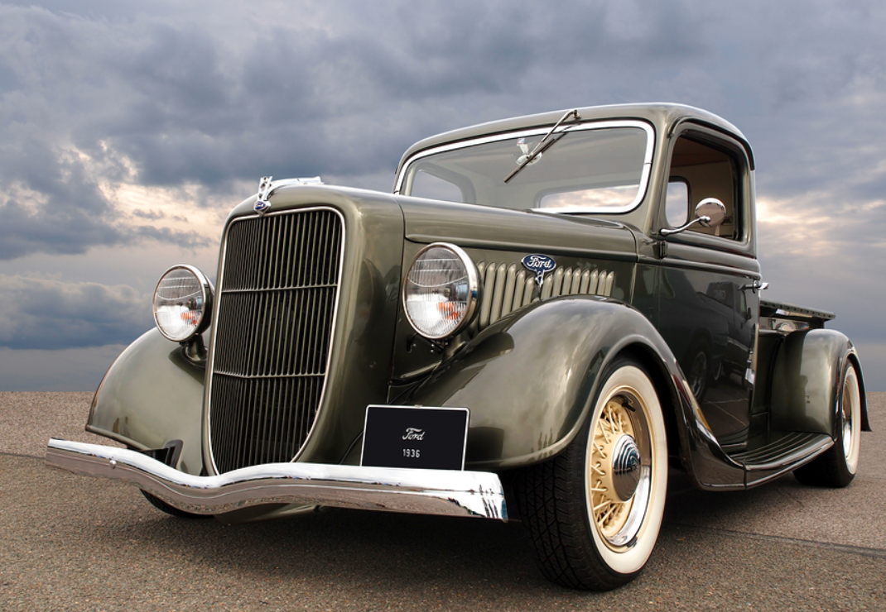
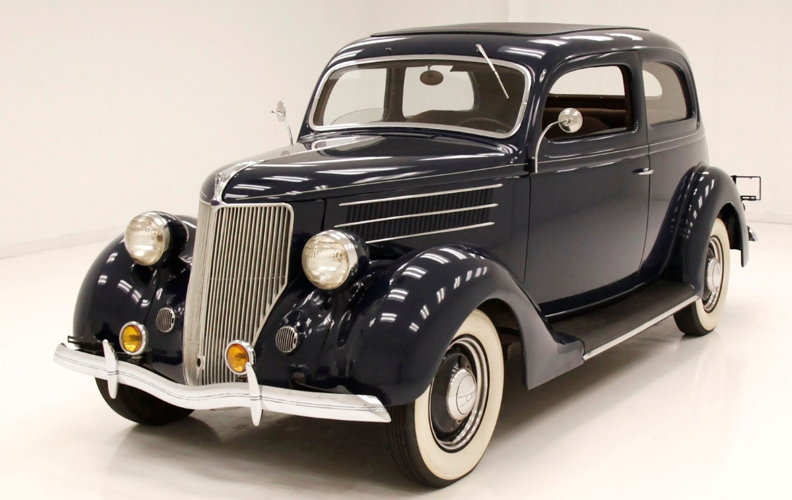
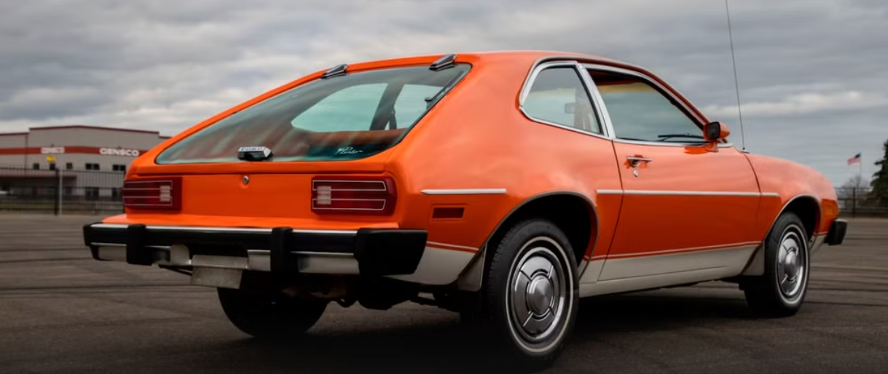

1908 — 1927
1908 — 1927CLASSIC FORD / 01
Ford Model T
The car that brought affordable motoring to millions.
Discover its story ↗Explore the machines that shaped generations — from early motoring pioneers to performance legends and hardworking icons.
 1908 — 1927
1908 — 1927The car that brought affordable motoring to millions.
Discover its story ↗ 1927 — 1931
1927 — 1931A new generation of styling, comfort and engineering.
Discover its story ↗
1932 onwardThe flathead V8 made eight-cylinder power more accessible.
Discover its story ↗
1940Pre-war styling with the character of Ford's V8 era.
Discover its story ↗ 1955 — 2005
1955 — 2005American personal luxury and grand-touring style.
Discover its story ↗ 1953 — 1983
1953 — 1983A landmark name in the long-running F-Series pickup story.
Discover its story ↗1964 — TODAYAn enduring performance icon with unmistakable proportions.
Discover its story ↗ 1964 — 1969
1964 — 1969 1966 — TODAY
1966 — TODAY 1960 — 1970
1960 — 1970A practical compact that helped shape the Mustang story.
Discover its story ↗
1971 — 1980No models match your search. Try another name.